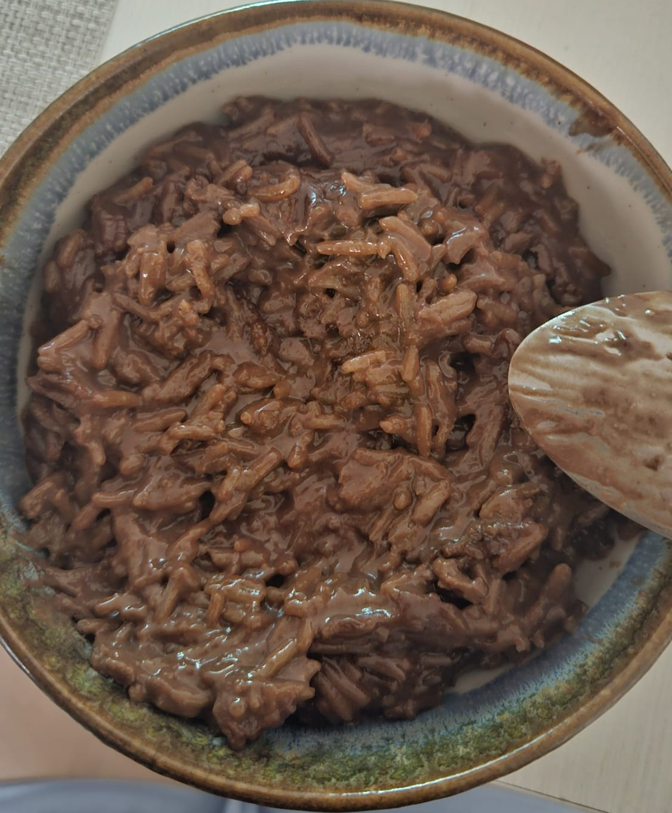

<- Home
Rice with Milk and Chocolate

Description
This is the most delicious easy-to-make dessert I've ever tried to cook.
You don't even need many ingredients in order to do it, perhaps you already have
more than half of the them around the house. So what are you waiting
for you need roughly 30 minutes, some ingredients you probably already have or
you can find at the closest local store and a sugar tooth to try this
amazing recipe. Let's get started!
Ingredients
- Milk - 650ml
- Rice - 150gm
- Vanilla Sugar - 20gm
- Butter - 25gm
- Dark Chocolate - 90gm
Steps
- Prepare all the ingredients, break the chocolate into tiles
- Put the milk and the rice into the saucepan
- Let them boil over a low heat until thickened
- Stir every now and then so it doesn't stick
- When thickened, add the vanilla sugar and mix it well
- Then add the butter and the pieces of chocolate
- Mix until the butter it's gone and the chocolate it's spread evenly
- Let them boil for roughly 5 more minutes
- Stir from time to time so it doesn't stick
- Let it cool down for a bit and VOILA, you're ready to try this masterpiece